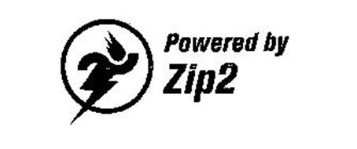
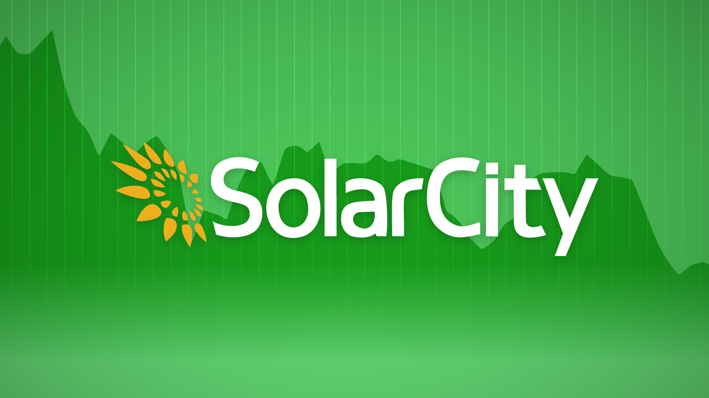
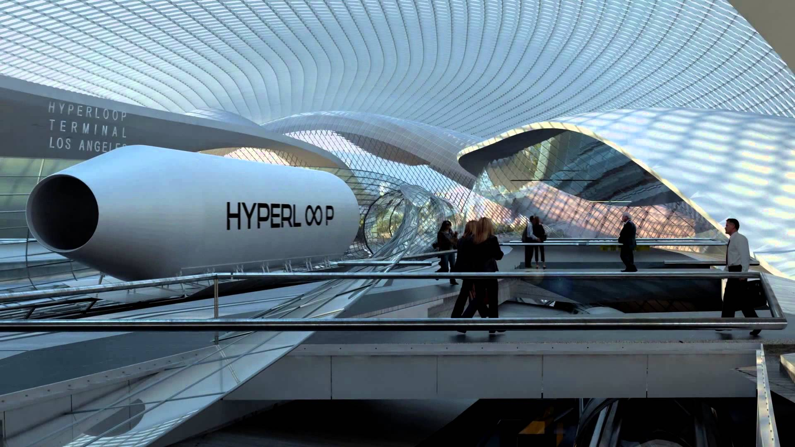
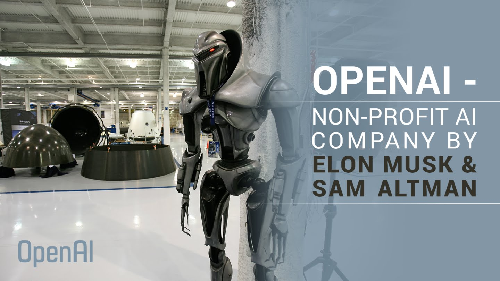
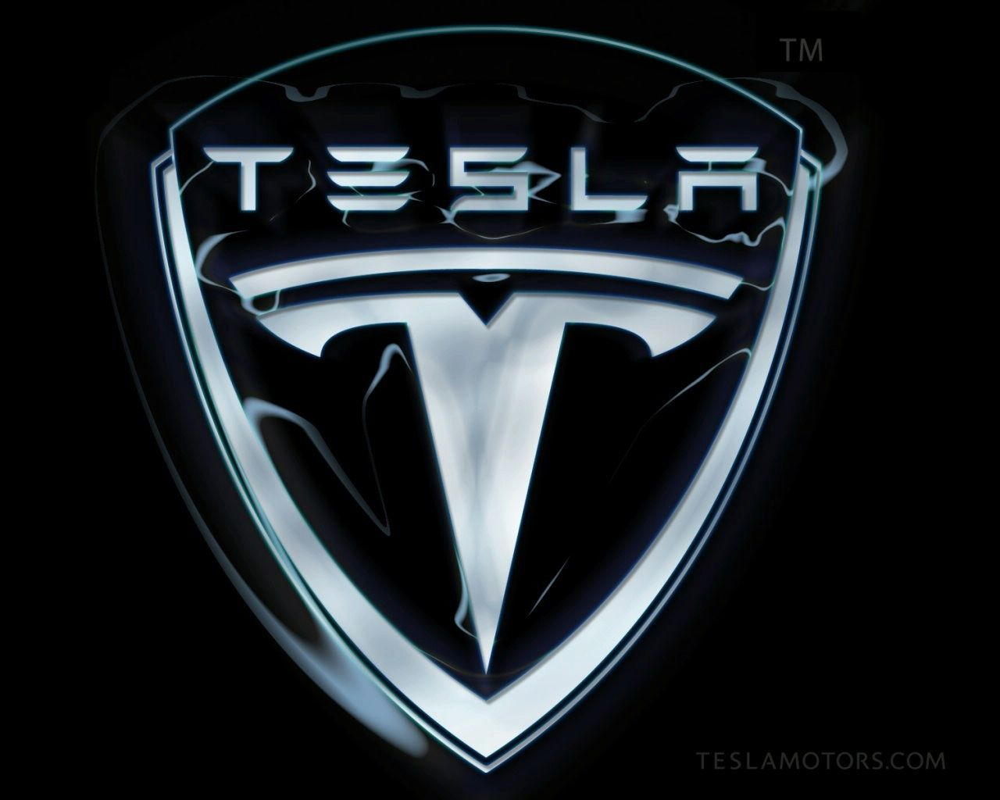

Zip2

In 1995, Musk and his brother, Kimbal, started Zip2, a web software company, with US$28,000 of their father's (Errol Musk) money.[40] The company developed and marketed an Internet "city guide" for the newspaper publishing industry.[48] Musk obtained contracts with The New York Times and the Chicago Tribune[49] and persuaded the board of directors to abandon plans for a merger with CitySearch.[50] While at Zip2, Musk wanted to become CEO; however, none of the board members would allow it.[40] Compaq acquired Zip2 for US$307 million in cash and US$34 million in stock options in February 1999.[51] Musk received 7% or US$22 million from the sale
X.com and PayPal

PayPal Holdings, Inc. is an American company operating a worldwide online payments system that supports online money transfers and serves as an electronic alternative to traditional paper methods like checks and money orders. PayPal is one of the world's largest Internet payment companies.[6] The company operates as a payment processor for online vendors, auction sites and other commercial users, for which it charges a fee.
Established in 1998,[7] PayPal had its IPO in 2002, and became a wholly owned subsidiary of eBay later that year.[8]
In 2014, PayPal moved $228 billion in 26 currencies across more than 190 nations, generating a total revenue of $7.9 billion (44% of eBay’s total profits).[10] The same year, eBay announced plans to spin-off PayPal into an independent company by mid-2015 and this was completed on July 18, 2015.[11] On July 20, 2015, PayPal had its second IPO that valued the company at $46.6 billion.
SolarCity

SolarCity Corporation is the largest American provider of solar energy services, headquartered in San Mateo, California. Among its primary services, the company designs, manufactures, permits, finances, sells, installs, maintains, and monitors solar energy systems and panels for residential, commercial and government applications. SolarCity sells renewable energy to customers at prices below utility rates, with a focus on reducing the cost of solar energy. The company has over 15,000 employees.[2]
SolarCity has grown rapidly as well as the overall market in the United States, which has grown from 440 megawatts (MW) of solar panels installed in 2009 to 6,200 MW installed in 2014.[3][4] The company has diversified in 2014 and 2015, with the aim of lowering costs and boosting sales. Currently, SolarCity installs more solar energy systems than any other company in the United States with just under 110,000 new installations in 2015.
SolarCity's long-term agreements with its customers generate recurring payments and create a portfolio of high-quality receivables that it monetizes to further reduce the cost of making the switch to solar energy. It offers energy storage services through its parent company, Tesla, including a turnkey residential battery backup service that incorporates Tesla's Powerwall.
On August 1, 2016, Tesla Motors announced in a joint statement with SolarCity it would be acquiring the company in an all-stock $2.6 billion merger. Tesla's mission since its inception has been to accelerate the world's transition to sustainable energy. As part of Elon Musk's "The Secret Tesla Motors Master Plan", Tesla sought to expedite the world's move from a mine-and-burn hydrocarbon economy towards a solar electric economy.[18] The announcement cited operational and cost "synergies", and integrated products would be realized with the merger. The action was approved by antitrust regulators.[19][20] More than 85% of unaffiliated shareholders from Tesla and SolarCity voted to approve the acquisition on November 17, 2016,[21][22] which was closed on the morning of November 21, 2016.[23]
Headquarters are held in San Mateo, California, while the company uses a distributed service model in which it provides installation from local operations centers. As of May 2016, SolarCity operates in 20 jurisdictions: Hawaii, the District of Columbia, and 18 other states on the West Coast, in the Southwest, and in the Northeast.[24]
Hyperloop
Hyperloop is a tradename and a registered trademark of the Space Exploration Technologies Corporation (SpaceX) for the high speed transportation of passengers and goods in partially evacuated tubes.[1][2]
Recently there has been a resurgence in interest in pneumatic tube transportation systems since being reintroduced, using updated technologies, by Elon Musk after 2012,[3][4] incorporating reduced-pressure tubes in which pressurized capsules ride on an air cushion driven by linear induction motors and air compressors.[5]
The outline of the original Hyperloop concept was made public by the release of a preliminary design document in August 2013, which included a suggested route running from the Los Angeles region to the San Francisco Bay Area, paralleling the Interstate 5 corridor for most of its length. Preliminary analysis indicated that such a route might obtain an expected journey time of 35 minutes, meaning that passengers would traverse the 350-mile (560 km) route at an average speed of around 600 mph (970 km/h), with a top speed of 760 mph (1,200 km/h). Preliminary cost estimates for the LA–SF suggested route were included in the white paper—US$6 billion for a passenger-only version, and US$7.5 billion for a somewhat larger-diameter version transporting passengers and vehicles[4] —although transportation analysts doubted that the system could be constructed on that budget.[6][7][8]
Hyperloop technology has been explicitly open-sourced by Musk and SpaceX, and others have been encouraged to take the ideas and further develop them. To that end, several companies have been formed, and dozens of interdisciplinary student-led teams are working to advance the technology.[9] However, some experts are sceptical, saying that the proposals ignore the expenses and risks of developing the technology and that the idea is "completely impractical".[10]
Construction of a full-scale prototype 5-mile (8 km) track started in 2016.[11] In addition, a subscale pod design competition on a very short, 1 mile (1.6 km), test track was built in Nevada – the first tests of the scale model occurred in May 2016.[12]
According to Musk, Hyperloop would be useful on Mars as no tubes would be needed because Mars' atmosphere is about 1% the density of the Earth's.[14][52][53] For the hyperloop concept to work on Earth, low-pressure tubes are required to reduce air resistance. However, if they were to be built on Mars, the lower air resistance would allow a hyperloop to be created with no tube, only a track.[54]
OpenAI
OpenAI is a non-profit artificial intelligence (AI) research company, associated with business magnate Elon Musk, that aims to carefully promote and develop friendly AI in such a way as to benefit, rather than harm, humanity as a whole. The organization aims to "freely collaborate" with other institutions[2] and researchers by making its patents and research open to the public.[3] The company is supported by over US$1 billion in commitments; however, only a tiny fraction of the $1 billion pledged is expected to be spent in the first few years.[4] The founders are motivated in part by concerns about existential risk from artificial general intelligence.[3][5]
Some scientists, such as Stephen Hawking and Stuart Russell, believe that if advanced AI someday gains the ability to re-design itself at an ever-increasing rate, an unstoppable "intelligence explosion" could lead to human extinction. Elon Musk characterizes AI as humanity's biggest existential threat. OpenAI's founders structured it as a non-profit free of financial stockholder obligations, so that they could focus its research on creating a positive long-term human impact.[4]
OpenAI states that "it's hard to fathom how much human-level AI could benefit society," and that it's equally difficult to comprehend "how much it could damage society if built or used incorrectly".[4] Research on safety cannot safely be postponed: "because of AI's surprising history, it's hard to predict when human-level AI might come within reach."[6] OpenAI states that AI "should be an extension of individual human wills and, in the spirit of liberty, as broadly and evenly distributed as possible..."[4] Co-chair Sam Altman expects the decades-long project to surpass human intelligence.[7]
Vishal Sikka, the CEO of Infosys, stated that an "openness" where the endeavor would "produce results generally in the greater interest of humanity" was a fundamental requirement for his support, and that OpenAI "aligns very nicely with our long-held values" and their "endeavor to do purposeful work".[8] Cade Metz of Wired suggests that corporations such as Amazon may be motivated by a desire to use open-source software and data to level the playing field against corporations like Google and Facebook that own enormous supplies of proprietary data. Altman states that Y Combinator companies will share their data with OpenAI.[7]
On April 27, 2016, OpenAI released a public beta of "OpenAI Gym", a platform for reinforcement learning research that aims to provide an easy-to-setup general-intelligence benchmark with a wide variety of different environments (somewhat akin to, but broader than, the ImageNet Large Scale Visual Recognition Challenge used in supervised learning research), and that hopes to standardize the way in which environments are defined in AI research publications, so that published research becomes more easily reproducible.[11][12]
Tesla Motors

Tesla Motors was incorporated in July 2003 by Martin Eberhard and Marc Tarpenning, who financed the company until the Series A round of funding.[85]
Both men played active roles in the company's early development prior to Elon Musk's involvement.[86] Musk led the Series A round of investment in February 2004, joining Tesla's board of directors as its chairman.[87] Musk took an active role within the company and oversaw Roadster product design at a detailed level, but was not deeply involved in day-to-day business operations.[88]
Following the financial crisis in 2008,[89] Musk assumed leadership of the company as CEO and product architect, positions he still holds today. Tesla Motors first built an electric sports car, the Tesla Roadster in 2008, with sales of about 2,500 vehicles to 31 countries. Tesla began delivery of its four-door Model S sedan on June 22, 2012. It unveiled its third product, the Model X, aimed at the SUV/minivan market, on February 9, 2012; the Model X launch was however delayed until September 2015.[90][91][92] In addition to its own cars, Tesla sells electric powertrain systems to Daimler for the Smart EV, Mercedes B-Class Electric Drive and Mercedes A Class and to Toyota for the RAV4 EV. Musk was able to bring in both companies as long-term investors in Tesla.[93]
Musk has favored building a sub-US$30,000 subcompact Tesla model and building and selling electric vehicle powertrain components so that other automakers can produce electric vehicles at affordable prices without having to develop the products in-house.[94] Several mainstream publications have compared him with Henry Ford for his work on advanced vehicle powertrains.[95]
In a May 2013 interview with All Things Digital, Musk said that to overcome the range limitations of electric cars, Tesla is "dramatically accelerating" its network of supercharger stations, tripling the number on the East and West coasts of the U.S. that June, with plans for more expansion across North America, including Canada, throughout the year.[96] As of January 29, 2016, Musk owns about 28.9 million Tesla shares, which equates to about 22% of the company.[97][98]
As of 2014, Musk's annual salary is one dollar. And, similar to Steve Jobs and others, the remainder of his compensation is in the form of stock and performance-based bonuses.[99][100]
In 2014, Musk announced that Tesla Motors will allow its technology patents to be used by anyone in good faith in a bid to entice automobile manufacturers to speed up development of electric cars. "The unfortunate reality is electric car programs (or programs for any vehicle that doesn't burn hydrocarbons) at the major manufacturers are small to non-existent, constituting an average of far less than 1% of their total vehicle sales", Musk said.[101]
In February 2016, Musk announced that he had acquired Tesla.com domain name from Stu Grossman, who had owned it since 1992.[102]